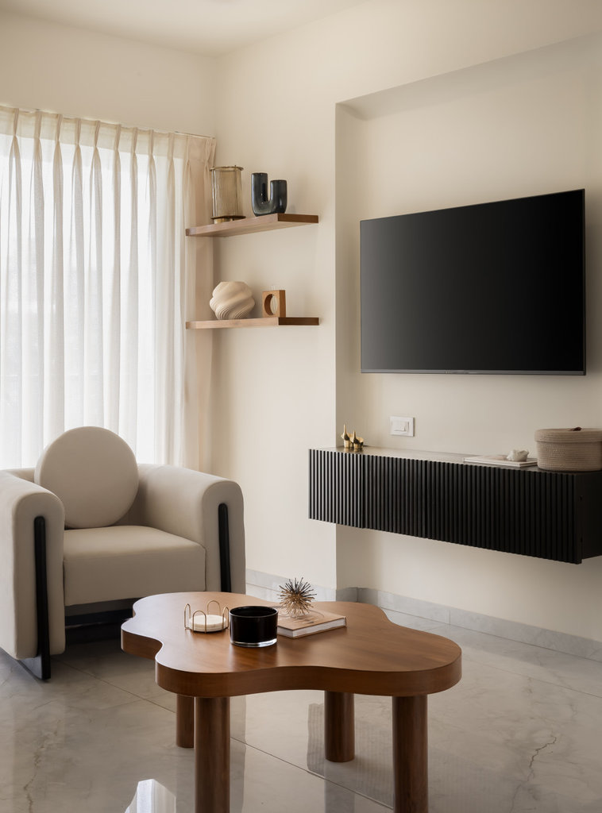

Caranzalem, Goa
Adarsh Milroc — 2BHK
Contemporary minimal design with splashes of quirk — truly capturing the people who live there.

- Location
- Caranzalem, Goa
- Completed
- —
- Type
- Apartment
- Scope
- Interior & furniture design, turnkey execution
This two-bedroom home in Caranzalem keeps its base contemporary and minimal — clean lines, calm surfaces, a disciplined palette — then lets carefully placed moments of quirk carry its owners' personality.
Interior design, furniture design and turnkey execution were all handled by Svay Studio, from the first drawing to the last styled shelf.